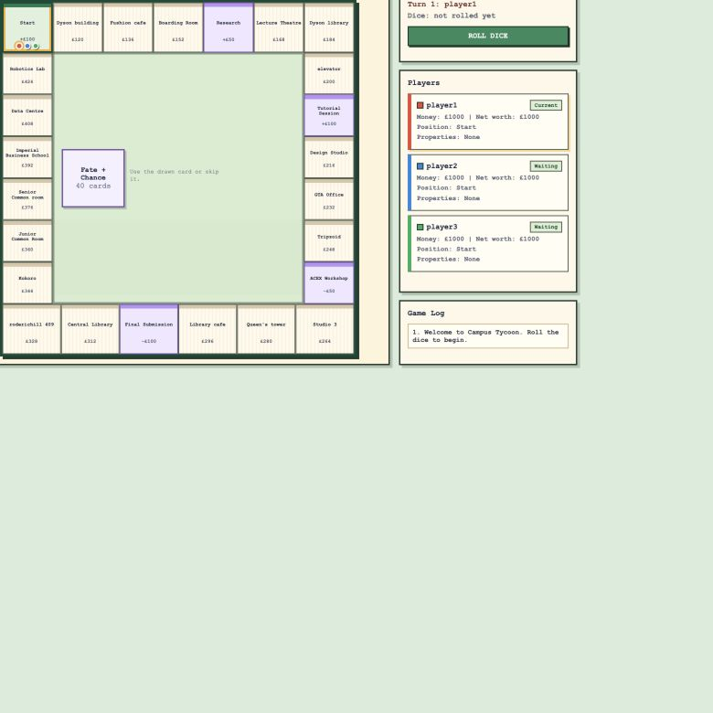

Show the next action.
Roll, resolve the space, decide on a card, then end the turn.
A familiar board.
A campus of possibilities.

A campus board game for 2–4 local players, with clear turn states and visible consequences.
01 / DESIGN A READABLE TURN
Roll, decide and draw a card. Actions, cash and ownership update together. Inspect a space, or jump to the full game.
Select a campus space to see its role.
Guided example: fixed dice and first card. Runs the original game rules; use the full game for random play.
Roll two dice to travel around campus. This example uses 1 + 2 to land on Boarding Room.
Ready to start. Player 1 has £1,000.
02 / DEFINE THE EXPERIENCE
A simplified Monopoly-style game combines campus places, shared resources and events. Priorities: clear turns, visible consequences and testable rules.
Roll, resolve the space, decide on a card, then end the turn.
Player colours, cash, ownership and an event log show the effects of each decision.
Separate rules from the interface to test edge cases without a browser.
03 / CONNECT THE RULES TO THE INTERFACE
Actions update game state; the interface redraws from it. Rules remain independent of the display.
Each phase exposes its actions: buy/skip, draw, use/keep/replace, held cards, then End Turn.
Owner colours link board spaces to player information.
Cash, position and the event log show each outcome.
Separate phases handle card-driven movement, extra rolls and the one-card hand limit.
04 / CHECK THE BEHAVIOUR
All 42 Mocha tests passed on 28 September 2026: movement, buying, rent, cards, bankruptcy and victory. Try four examples below.
Position wraps around the board and awards the £100 bonus.
Cash decreases by the price and ownership moves to the buyer.
The card enters the player’s hand before the held-card window.
Unaffordable rent eliminates a player and the last active player wins.
These live checks are a small selection, separate from the 42-test Mocha suite.
Next: observe first-time players’ card timing, pacing, fairness and recovery from mistakes. Rule tests do not establish usability or game balance.
05 / PLAY THE PROTOTYPE
Choose 2–4 players sharing one device. The game runs locally; refreshing starts a new game.
Reconstructed from the submitted code and README. The guided turn uses the original rule module.